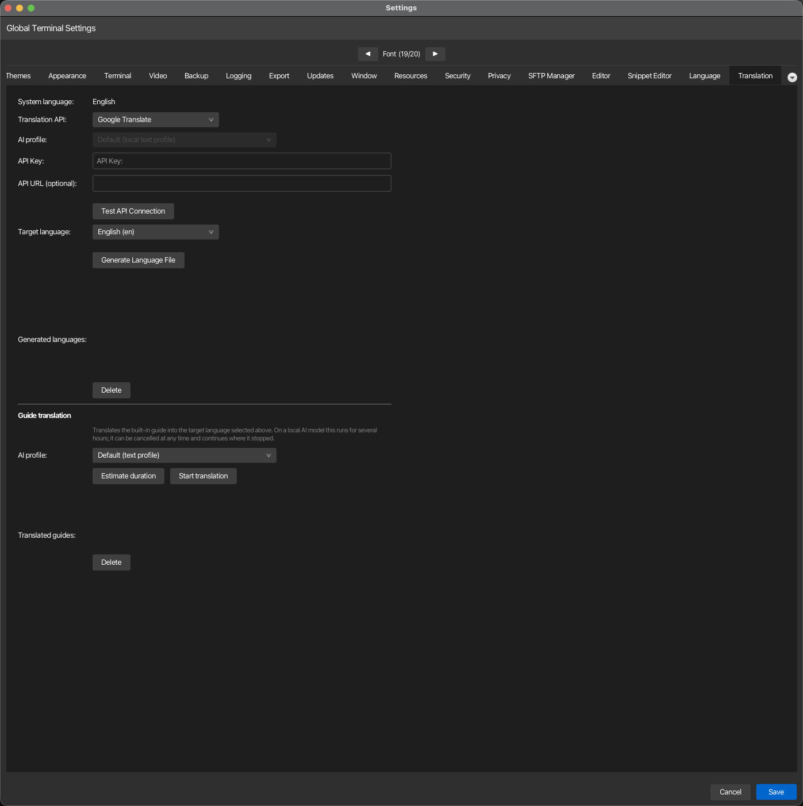

Translation¶
Configure dynamic translation of korTTY's user interface using external translation APIs. This tab allows you to select a translation provider, authenticate with its API, and generate language files to display the UI in your target language. Open via Configuration → Global Settings → Translation; stored in ~/.kortty/global-settings.xml.

| Setting | Type | Values | Default | Stored as |
|---|---|---|---|---|
| System language | text | — | System locale | — |
| Translation API | dropdown | Google Translate, DeepL, LibreTranslate, Microsoft Translator, Yandex Translate, Local AI text profile | Google Translate | translationApiProvider |
| AI profile | dropdown | "Default (local text profile)" plus every configured AI profile | Default (local text profile) | — |
| API Key | text | — | — | encryptedTranslationApiKey |
| API URL (optional) | text | — | — (null = use provider default) | translationApiUrl |
| Azure region (optional) | text | — | — (null = global resource) | translationApiRegion |
| Test API Connection | button | — | — | — |
| Target language | dropdown | System locale and available locales (Locale objects) | System locale | — |
| Generate Language File | button | — | — | — |
| Generated languages | list | Available dynamically translated language files | — | — |
| Delete | button | (removes selected generated language file) | — | — |
| Regenerate outdated | button | (visible when outdated files exist) | — | — |
Note
API Key storage: The API key is encrypted using your master password and stored securely in global-settings.xml. If the master password vault is locked, you will receive a warning and the key will be kept in the field until you can unlock the vault or set a master password in Settings.
Note
Generated languages: The "Generated languages" list displays language files that have been created via the Generate Language File button. Each generated file corresponds to a dynamically translated UI in that target language. Use the Delete button to remove a language file, or use Regenerate outdated to update files created with an older app version to include newly added translation keys.
Provider credentials and endpoints¶
Each keyed provider expects its own kind of credential in the API Key field. The API URL field stays empty unless you deliberately point korTTY at a different host — a self-hosted LibreTranslate, a regional Azure endpoint, or a proxy.
| Provider | API version korTTY calls | What goes in API Key | Default endpoint |
|---|---|---|---|
| Google Translate | Cloud Translation v2 (Basic) | A Google Cloud API key with the Cloud Translation API enabled | https://translation.googleapis.com/language/translate/v2 |
| DeepL | DeepL API v2 | Your DeepL auth key, sent as DeepL-Auth-Key |
https://api.deepl.com/v2/translate, or https://api-free.deepl.com/v2/translate for a free key |
| LibreTranslate | LibreTranslate /translate |
Optional; required by public instances that enforce quotas | https://libretranslate.com |
| Microsoft Translator | Azure AI Translator v3.0 | The Azure Translator resource subscription key | https://api.cognitive.microsofttranslator.com |
| Yandex | Yandex Cloud Translate v2 | A Yandex Cloud service account API key, sent as Api-Key |
https://translate.api.cloud.yandex.net/translate/v2 |
Yandex: the v1.5 API is no longer usable
Yandex stopped issuing keys for the old Translate API v1.5 (translate.yandex.net/api/v1.5) and
switched off the free keys already in circulation. The host still answers, but no key you can
obtain authenticates against it. Create a service account in the Yandex Cloud console, assign it the
ai.translate.user role, issue an API key for that account, and store that key here. Leave
API URL empty: an address still pointing at the v1.5 host is ignored, and korTTY writes a
warning to the log until you clear it. The folder is implied by the service account, so nothing
else has to be configured.
Note
DeepL Free vs Pro: korTTY guesses the endpoint from the key — historically only Free keys
end in :fx — and corrects itself once if the other endpoint turns out to be the right one.
Setting API URL explicitly pins the endpoint and disables that correction.
Note
Regional Azure resources: the Azure region row appears only while Microsoft Translator
is selected, because only that provider reads it. Leave it empty for a resource created in the
Global region. A resource created in a specific region — or one with a custom domain or a
virtual network — rejects any call that does not name its region, so enter the region shown on
the resource's Keys and Endpoint page, for example germanywestcentral. A custom-domain
resource also needs its full path in API URL:
https://<resource>.cognitiveservices.azure.com/translator/text/v3.0.
Local translation¶
Choose Local AI text profile to translate through an AI profile instead of a translation API. API URL and API Key are disabled for this provider because the profile brings its own endpoint and credentials. The model must return one strict JSON translations array with the same number and order of input strings; a batch that comes back malformed is retried and split in half rather than aborting the run, and a string the model never returns in usable form keeps its English text.
The AI profile dropdown next to it decides which profile does the work:
- A profile you pick is always used, whatever its connection mode — an embedded llama.cpp or MLX model, a cloud endpoint such as Anthropic or an OpenAI-compatible API, or a local CLI profile. Its API key is resolved the same way the rest of the application resolves one, so the master-password vault must be unlocked when the profile needs an encrypted secret.
- Default (local text profile) uses the profile assigned to the Text/translation role in AI > AI Manager, and only if that profile runs an embedded (local) model. The default never falls back to a cloud profile automatically: this provider exists for people who cannot or do not want to send their interface strings to an external service. If that role holds a cloud or CLI profile, korTTY names it and directs you to this dropdown instead of failing with a generic error.
This mirrors the AI profile dropdown in the guide-translation section below, so both translation jobs can be pointed at the model you want — for example a small local model for the interface strings and a stronger cloud model for the guide, or the same profile for both.
Warning
Credentials: External providers require their normal API key, except a LibreTranslate endpoint that is explicitly configured without one. Local AI requires no translation-provider key, but an embedded model needs its GGUF/MLX model and runtime installed, and the master-password vault must be unlocked when the selected AI profile needs any encrypted secret.
Guide translation¶
A second, independent job below translates the bundled offline guide — the same site this page is part of — into the target language selected above, so the in-app Help → Guide window and its search can be read fully in that language rather than only the interface labels.
| Setting | Type | Values | Default | Stored as |
|---|---|---|---|---|
| AI profile | dropdown | "Default (text profile)" plus every configured AI profile | Default (text profile) | — |
| Estimate duration | button | — | — | — |
| Start translation | button | — | — | — |
| Cancel | button | (shown while a translation or a duration estimate is running) | — | — |
| Translated guides | list | Guide languages translated so far | — | — |
| Delete | button | (removes the selected translated guide, its assets and its search index) | — | — |
Picking a profile in the AI profile dropdown here always uses that profile, whatever its connection mode. Leaving it on Default (text profile) follows the Translation API selection above: with the provider set to Local AI text profile, the guide uses the profile assigned to the Text/translation role in AI Manager — and only if that profile runs an embedded (local) model — while any other provider with a stored key translates the guide through that translation API instead.
Start translation with no guide profile picked requires a workable Translation API above: with the provider on a keyed service (for example Google Translate) and no API key stored, starting is refused with "Please enter an API key." — a picked AI profile always suffices on its own. If the run cannot start for another reason, the message names the cause: a picked profile whose model is not downloaded or selected, no guide profile and no API key, or no local text profile configured.
Deleting a translated guide removes its whole directory under ~/.kortty/guide/<language>/ — the translated pages, the staged theme assets, its search index and its resume checkpoint — after a confirmation prompt.
Why this runs in the background¶
Translating the guide is not a quick action: the bundled site holds roughly 5,500 distinct pieces of text once repeated navigation and headings are deduplicated, and depending on the model this can take anywhere from a few minutes to most of a day. Starting it does not block the Settings dialog or the rest of korTTY:
- The translation keeps running after you close Settings, switch tabs, or continue working in terminals.
- A small progress indicator — a bar, a percentage and an estimated time remaining — appears at the right end of korTTY's menu bar for as long as a guide translation is in progress, and disappears again once it finishes.
- While the run is active, the dialog shows a progress bar and a status line ("Translating… 42%"). Cancel stops the job at the next safe point rather than losing what has already been translated: progress is checkpointed to disk as it goes, so starting the same language again continues from where it left off instead of starting over.
- The in-dialog progress display and Cancel belong to the Settings dialog that started the run — reopening Settings later does not re-attach to a running job, and Start translation then only reports "A guide translation is already running." After closing Settings, the running job is paused via the quit dialog below (or simply left to finish).
- If you try to quit korTTY while a guide translation is running, a dialog offers to pause it and quit, or to keep korTTY open; choosing to pause leaves the checkpoint in place for the next run.
- After installing a korTTY update that changed the guide's content, and if you already have a translated guide for your language, korTTY offers once per run — a few seconds after the window opens, and never while a translation is already running — to bring it up to date; Update now opens this Settings tab, where you start the run yourself. Because progress is checkpointed by the exact English text of each piece, updating only re-translates sentences that actually changed in the release — everything else is reused as-is.
Why a reasoning model is a poor fit¶
Some AI models are built to "think out loud" before answering — writing an extended chain of reasoning into their reply before the actual output, a technique tuned for hard problems like math or coding. That reasoning is not part of the translation, but the model still has to generate it, and generating text is the slow part of running a local model. Measured on this project's own guide, a reasoning model produced about 4.4 completion tokens for every input token — roughly 4,400 tokens of reasoning to translate 1,000 characters of prose. On identical hardware this was the difference between a translation run of about an hour and one of six hours or more.
If the AI profile you pick for guide translation is a reasoning model, korTTY warns you before starting or estimating, naming the model and letting you continue anyway or cancel. The check looks at the model's name (publishers of reasoning models advertise it there — "reasoning", "thinking", "R1", "QwQ", "o1" and similar are recognized), so it costs nothing to run and may occasionally miss a differently-named reasoning model, but it will not falsely warn about a plain instruct model.
Suitable models are instruction-tuned ("instruct") chat models without a reasoning/thinking mode — the kind normally used for translation, summarization or rewriting rather than multi-step problem solving. For an embedded local profile, look for MLX or GGUF builds whose name includes "instruct" and not "reasoning", "thinking" or "R1", for example a Qwen2.5-Instruct or Phi-4-mini-instruct build at a size your hardware can run comfortably (4-bit quantized 7-8B models are a practical default on Apple Silicon). Larger instruct models generally translate more fluently at the cost of speed; the duration estimate below lets you compare before committing to a full run.
Estimating how long a full translation will take¶
Estimate duration measures the AI profile selected above against a real, representative sample of the guide's text and projects how long translating everything still outstanding would take, without committing to the full run:
- It sends one small, untimed "warm-up" request first, so that a local model's one-time loading cost — which is paid once for an entire run, not per batch — is not mistaken for ongoing translation speed and multiplied across every batch of the projection.
- It then translates one real, budget-sized batch of guide text and times it. This is a genuine translation, not a simulation: the sample is kept, so estimating first and then starting a full run does not repeat that work.
- From that single timed batch, it computes two projections for the remaining text — one assuming cost scales with the number of requests, one assuming it scales with the amount of text — and reports the resulting range together with how long the remaining pages and text would take. Reporting a range rather than one number reflects that a single sample cannot fully separate a model's fixed per-request overhead from its per-character cost; the estimate keeps that uncertainty visible rather than hiding it behind a single overly precise number.
If the sample fails outright — the AI profile is unreachable, misconfigured, or produced nothing usable — the estimate reports that as a connection problem instead of a duration, so it is not mistaken for "translation will be instant." And if nothing is left to translate, the estimate simply reports that the guide is already fully translated for this language.
Note
The reasoning-model warning above appears for Estimate duration as well as Start translation, since running an estimate against a reasoning model already spends real time on it.